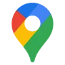
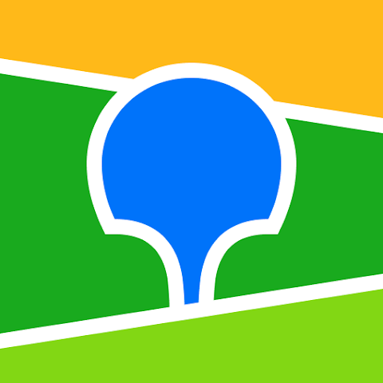

Карточка-невидимка
Ваша компания находится за пределами ТОП-10 в радиусе 1–2 км от клиента. Пользователи просто не доходят до неё в результатах поиска.
Помогаем бизнесу получать больше клиентов из Яндекс.Карт, Google Maps, 2GIS и Apple Maps без переплат за клики.

Google Maps
2GISВаша компания находится за пределами ТОП-10 в радиусе 1–2 км от клиента. Пользователи просто не доходят до неё в результатах поиска.
Низкая оценка и неотвеченные жалобы отпугивают клиентов. Люди предпочитают конкурентов с рейтингом от 4.5 звезд и живым диалогом.
Отсутствие актуального прайса, некачественные фото и неверный график заставляют пользователей сомневаться, работает ли компания вообще.
Упаковываем профиль: детальный прайс-лист, продающее описание, фотографии товаров, контакты и SEO-подзаголовки.
Поднимаем профиль в ТОП выдачи Яндекс, Google и 2GIS по ключевым геозапросам клиентов в вашем районе.
Помогаем выстроить стабильный поток положительных отзывов от клиентов и профессионально нейтрализуем негатив.
Настраиваем трекинг переходов, кликов, звонков и построенных маршрутов для оценки реальной окупаемости.
Карточка появляется на первых строчках по основным поисковым запросам в радиусе охвата.
Пользователи нажимают кнопку вызова прямо из карточки, не переходя на другие сайты.
Увеличение количества клиентов, которые приехали в вашу точку по навигатору карт.
Анализируем позиции вашей компании, отслеживаем конкурентов в локации, собираем семантическое ядро поисковых запросов и формируем пошаговую стратегию вывода в ТОП.
Полностью пересобираем и наполняем профиль: вносим ключевые фразы, загружаем профессиональные фотографии, оформляем блок услуг и внедряем триггеры доверия.
Работаем с поведенческими факторами, модерируем отзывы, запускаем локальные промо-акции и предоставляем вам прозрачную отчетность по ключевым действиям клиентов.
Первые результаты в виде роста показов и переходов вы заметите уже через 2–3 недели после завершения оптимизации карточек и прохождения модерации поисковыми системами.
Нет, не обязательно. Наша главная задача — вывести ваш бизнес на лидирующие позиции в органическом (бесплатном) поиске карт. Платная подписка Яндекс.Бизнес может служить лишь дополнительным ускорителем.
Мы работаем по официальному договору. Гарантируем качественное выполнение всех запланированных этапов работ: внутреннее SEO, проработку репутации и оптимизацию карточек под алгоритмы геосервисов.
Потребуется предоставить доступ владельца или администратора к вашим текущим кабинетам на картах (Яндекс.Бизнес, Google Business Profile, 2GIS) и прислать базовые материалы: прайс-листы, фото и описание компании.
Оставьте заявку на бесплатный экспресс-анализ ваших карточек на картах. Мы покажем точки роста и то, как обогнать конкурентов в вашей локации.